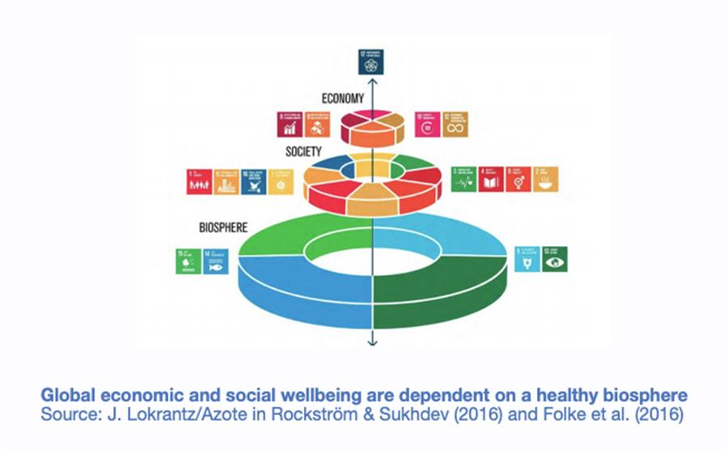

Published on 21 September 2020, 05:30. Updated on 21 September 2020, 09:40.
Elise Buckle: ‘It’s time for a global reset to rebalance our relationship with nature’
by Bruno Jochum
A planetary emergency is unfolding and never have the stakes been higher. Elise Buckle talks to Geneva Solutions about the UN General Assembly and the UN biodiversity summit taking place in New York and online over the next two weeks. In the midst of the Covid-19 pandemic and highly polarised US elections just some weeks away, what can we expect from multilateral dynamics at this particular moment in time?
Buckle has been working in the field of sustainable development and climate change for twenty years. Involved in several of the preparatory steps for this week’s events, she is currently the president of Climate & Sustainability, a platform for collaboration for changemakers, advising the UN on climate and SDGs, and facilitating the Planetary Emergency Partnership, a group of 250-plus influential partners from around the world. She answers our questions.
Geneva Solutions: What should we expect this week from what will be largely virtual venues? Can multilateral cooperation deliver the action we need ?
This is clearly a test for the UN and a test for multilateralism. At a time of Covid-19 uncertainty, a turbulent US election campaign and a tense relationship between the world's two superpowers, the UN wants this meeting to remind member states of its value.
The 75th UN General Assembly takes place from September 15-30, and the title of the opening session of the virtual 'high level' event running from September 21 underlines the strategic aim of this meeting: 'The Future We Want, the UN We Need: Reaffirming our Collective Commitment to Multilateralism'.
This general assembly is seen as a 'reset' moment for the global economic, nature and climate action after a year dominated by Covid-19, and represents a chance for the UK to generate momentum behind the COP26 climate summit in Glasgow next year.
This general assembly is seen as a 'reset' moment for the global economic, nature and climate action after a year dominated by Covid-19
Despite a temporary pandemic-induced lull in emissions, global warming is accelerating and causing unprecedented impacts: fires are burning up the US West Coast, hurricanes are smashing the East coast, floods are hitting Bangladesh, India, and West Africa while fears are growing over the pace of ice melt in the Antarctic.
Antonio Guterres, the UN secretary-general, will therefore make several speeches focused on climate and the environment. He's likely to ramp up the rhetoric around his 'six principles for Covid-19 recovery that were first floated late spring this year.
The UN Biodiversity Summit - on 30 September - is also a key political milestone before the Convention on Biological Diversity (CBD) Conference of Parties (COP 15) which will be hosted in Kunming by China in 2021.
A landmark Pledge may be announced on 28 September by the heads of state of a large group of leading countries. Why is this important?
Yes, the good news is that there are now some strong political signals showing that the current state of planetary emergency is being taken seriously. World leaders are starting to shift their political discourse, and - watch the space - a big announcement is coming up on Thursday 28 September.
Costa Rica, the EU and the UK played a key role drafting and negotiating the text for several months, with a group of like-minded countries ready to form a « coalition of the willing » to raise ambition and respond to the planetary emergency for climate, people and nature. The final text was circulated to all Members States via diplomatic channels on September 3rd. The Pledge for Nature is currently being endorsed by around 40 countries. Never such a large number of State representatives had come together at the highest level, and agreed on common language clearly stating the importance of responding to the interconnected crisis for climate, people and nature.
We are expecting this announcement to be a major political milestone. The same way the High Ambition Coalition for Climate was instrumental in raising ambition and landing the 1.5 degree target into the Paris Agreement, this new coalition could play a key role to reach a stronger agreement at the CBD COP15 in China next year and to some extent at the UNFCCC COP26 in a Glasgow on Nature-Based Solutions for climate action.
In endorsing this Pledge, heads of states will commit themselves not simply to words but to meaningful action, finance and mutual accountability to address the planetary emergency. They will also urge all other stakeholders to join in making commitments on the road to next year’s critical COP meetings on climate and biodiversity, with strong implementation and finance mechanisms, also at domestic level.
Could you explain how the climate crisis, the collapse of biodiversity and the coronavirus pandemic are all related and why is a comprehensive response needed?
We are facing a triple crisis for climate, people and nature. The existential risk is real.
Our current economic system is set on short-term GDP growth at any cost, which is the underlying driver of natural resources depletion and social inequalities, with assaults on natural systems compounding the limits to wellbeing.
The global health crisis is the symptom of a much deeper and longer-term disruption. Science tells us that deforestation, biodiversity loss, wildlife trafficking and meat consumption increase the risks of pandemics. Nearly three-quarters of emerging infectious diseases come from animals, as a spill-over effect of their natural habitat loss or industrial meat production. Our consumption patterns drive more and more resource-intensive industries, mining and agricultural production.
We are facing a triple crisis for climate, people and nature. The existential risk is real.
Stopping illegal wildlife trafficking and illegal timber, logging and deforestation are all essential to secure a pandemic-proof world in the future. If we protect nature, we protect human health as well.
Nature and climate also go together: biodiversity loss is accelerated by climate change and exacerbates it; but nature can deliver 1/3 of the solutions and 1/3 of the global greenhouse gas emissions’ reduction needed to achieve the Paris Agreement. Nature should be our best ally in the fight against climate change but is now turning into an enemy, with so many forest fires raising the alarm in the Amazon, Australia, California, Siberia, creating dangerous feedback loops with the release of millions of tons of carbon into the atmosphere.
Now is the time to reconnect with nature, as our best friend to combat climate change, and to rebalance our relationship with nature for a stabilized and safe climate future.
Now is the time to reconnect with nature, as our best friend to combat climate change, and to rebalance our relationship with nature for a stabilized and safe climate future. Nature underpins human health, well-being and prosperity, nature is our future on Earth.

What does the journey towards a better future look like?
A truly systemic transformation is needed for climate, people and nature:
- responding with a green healthy and just transition to the current crisis.
- addressing the root causes of the problems, the drivers of biodiversity loss and global warming.
- changing our production and consumption patterns with sustainable food systems to meet people's needs within planetary boundaries.
- scaling up nature based-solutions.
- switching to sustainable supply chains and circular economy.
- shifting financial incentives and redirecting harmful subsidies towards a nature positive and carbon neutral recovery.
- and last but not least measuring progress through the lens of new indicators of well-being for people and the planet, beyond GDP growth.
By going beyond a siloed approach, we can emerge from this emergency through a truly systemic transformation of society for people and the planet. The next 18th months will be critical, to take a U-turn and embark on a new journey towards the triple goal of carbon neutrality by 2050, a nature positive recovery and a just transition. Our planet Earth is our only home, there is no planet B.
- Save the date: 28th of September (9:00-10:30 am EST): Planetary Response to our Planetary Emergency - this High-Level event will feature Heads of State and Government supporting the Leaders Pledge for nature that will be announced on the day.
- Watch this film on Monday 21 September, Imagine for 1 minute
#New York #Pledge #UNGA 75 #biodiversity #United Nations
SOURCE: GENEVA SOLUTIONS